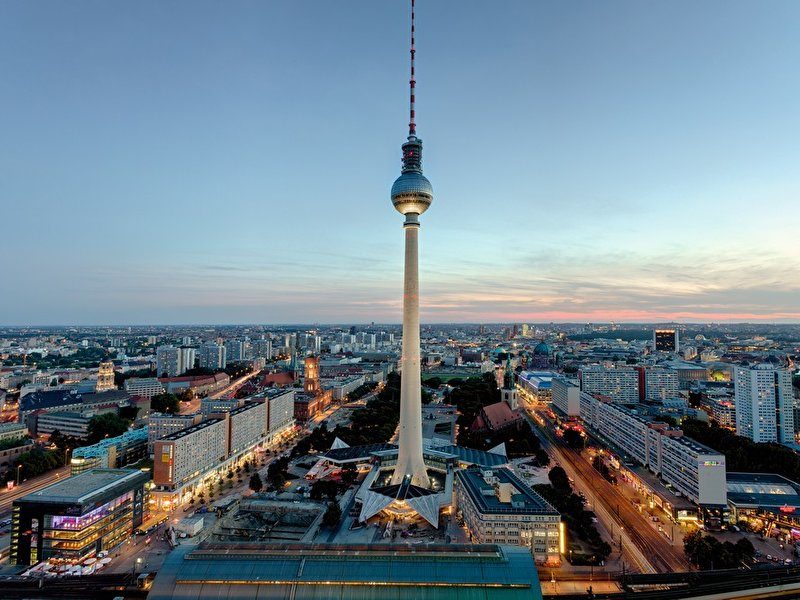

Sehenswürdigkeiten

Top-Sehenswürdigkeiten in Berlin
Die Highlights unter den Sehenswürdigkeiten: Diese Attraktionen müssen Berlin mehr

Sehenswürdigkeiten nach Thema
Die wichtigsten Sehenswürdigkeiten Berlins sortiert nach Thema, wie Architektur, Parks, NS-Zeit und Gedenkstätten. mehr

Alle Sehenswürdigkeiten
Berlins Sehenswürdigkeiten, Schlösser und Denkmäler mit Adresse, Informationen, Fotos und Verkehrsverbindung. mehr